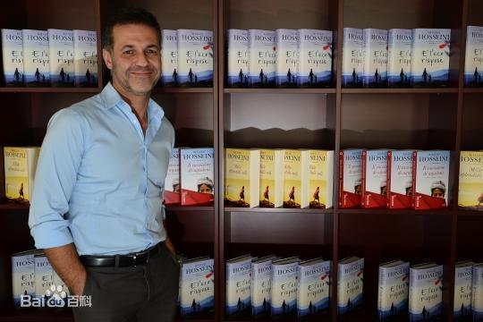
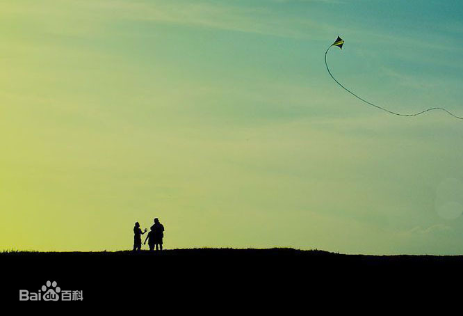

《追风筝的人》是美籍阿富汗作家卡勒德·胡赛尼（Khaled Hosseini）的第一部长篇小说，是美国2005年的排名第三的畅销书
卡勒德·胡赛尼（Khaled Hosseini），1965年生于阿富汗首都喀布尔市，后随父亲迁往美国。胡赛尼毕业于加州大学圣地亚哥医学系，
现居加州。“立志拂去蒙在阿富汗斯坦普通民众面孔的尘灰，将背后灵魂的悸动展示给世人。 《追风筝的人》是他的第一本小说，因书中
角色刻画生动， 故事情节震撼感人，出版后大获好评，获得各项新人奖，胡赛尼获得联合国人道主义奖，并受邀担任联合国难民署亲善大使
小说主人公阿米尔和仆人之子哈桑从小一起长大，"喝过同样的乳汁长大的人就是兄弟，这种亲情连时间也无法拆散"，尽管他们分属不同的教派，等级
地位不同，但种族和社会或者宗教无法抹杀他们一起度过的悠长岁月。纯洁善良的哈桑对阿米尔少爷无条件地忠贞，哈桑说出的第一个字是"阿米尔"，哈
桑说，"为你，千千万万遍"。然而阿米尔，出于软弱，或者说怯懦，在举行阿富汗传统的风筝比赛的一个冬天，在哈桑为他去追风筝而被人强暴之时，选
择了沉默。为了掩饰自己的懦弱，为了缓解自己的不安，阿米尔选择了更残酷的方式:他诬陷哈桑偷了他的手表和一些钱，"那是我想要的，要继续生活，
要遗忘，要将过去一笔勾销，从头来过。我想要能重新呼吸。"
哈桑走了。但过去永远是无法一笔勾销的。这个国家已经天翻地覆。阿米尔和他的父亲逃离战火中的阿富汗，前往美国。在那里，阿米尔上大学，摆地摊，结
识了深爱的妻子。但过去无法跨越，他在自己的心里审判了自己的罪行。小说的后半部分便是阿米尔的赎罪之行。他前往阔别已久的阿富汗，寻找哈桑之子。
小说作为一种古老而又高贵的叙事文学传统，在此和阿米尔的个人净化融合在一起。某种意义上，文学有如宗教，是关于内心的、个人的和自我意识的。小说
开篇便是净化的开始，它连接着罪行和赎罪。
阿米尔:一个有着复杂形象的人物,开始存在等级观念和宗教民族观念,斗风筝比赛结束后，阿米尔看到哈桑为保护追到了的风筝被阿塞夫强暴的场景，懦弱地跑
开了。而阿米尔的心里活动是：他只是个哈扎拉人，不是吗？可是，对父爱的渴求、对优越感的渴望以及面对恶势力时的自保并不能笼统地说是人性的恶，阿米尔只
是表现出了人性中本来面目。何况自此以后半生，他都被愧疚自责的阴影所缠绕。面对曾经的错误的时候，心灵上的愧疚和折磨已经使他在赎罪道路上跨出了一大半，
而实质性的赎罪行为（回国救出哈桑的儿子索拉博）更是作出了极大的弥补。所以阿米尔已从自私懦弱的小孩子蜕变成正直勇敢的能够担当的男人。
哈桑：为你，千千万万遍。”哈桑的一句话令多少人感动，这是一个孩子对另一个孩子忠诚表白，为了阿米尔，哈桑愿意做千千万万的事情。体现了人性中的善良，
却与民族、宗教和等级等全部无关，他是哈扎拉人，是什叶派，是富家奴仆，没有金钱地位，没有接受文化的机会，可是他勤劳勇敢、忠诚正直，拥有赤裸裸的原
始个体所具备的一切特质。
《追风筝的人》清新自然，以写实的笔法，诉说着温情与残酷，美丽与苦难，它不仅仅展示了一个人的心灵成长史，也展示了一个民族的灵魂史，一个国家的苦难史。
这部小说流畅自然，就像一条清澈的河流，却奔腾着人性的激情，蕴含着阿富汗斯坦这个古老国家丰富的灵魂，激荡着善与恶的潜流撞击。因为这部书，让世界了解了一个
遭受战火蹂躏的、默默无闻的阿富汗斯坦人，这才是文学的魅力，也是这部小说的艺术魅力。但是这部小说不仅如此，它之所以能够吸引不同民族、国家的读者，撼动读者
内心纤细的情感，是因为它讨论了关于人性和人性的拯救问题，这是现代人类面临的共同话题。其实，人性的救赎是这部小说的核心价值。
《追风筝的人》在美国亚马逊当年3月底文学畅销书排行榜上排名第二，超过《达·芬奇密码》，并成为英国《观察家报》2005年度最佳图书、台湾诚品书店、金石堂
法国读书会2006年度首选书，法国《ELLE》杂志读者票选年度最佳小说奖，美国图书馆协会选书。2007年被导演马克·福斯特 拍成同名电影，影片获获得80届奥斯卡最佳
配乐提名。